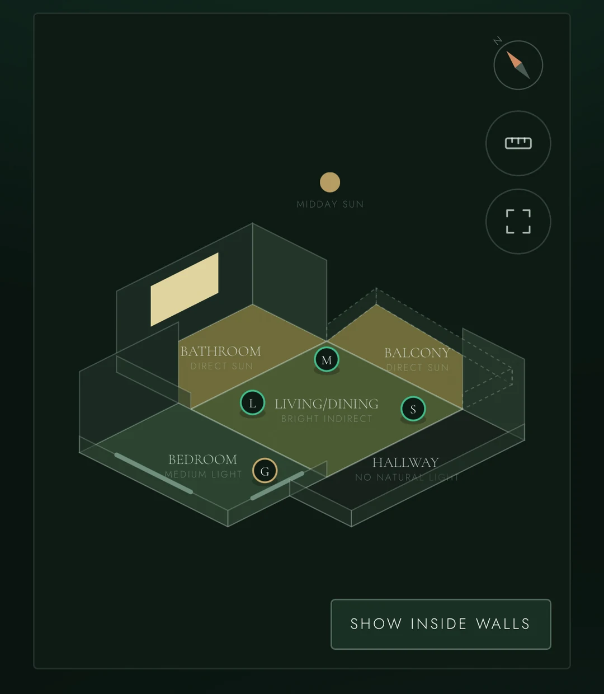
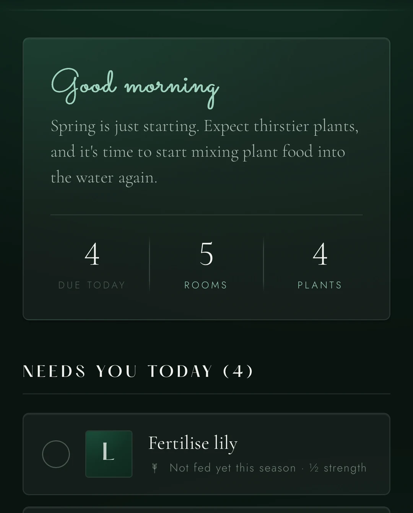
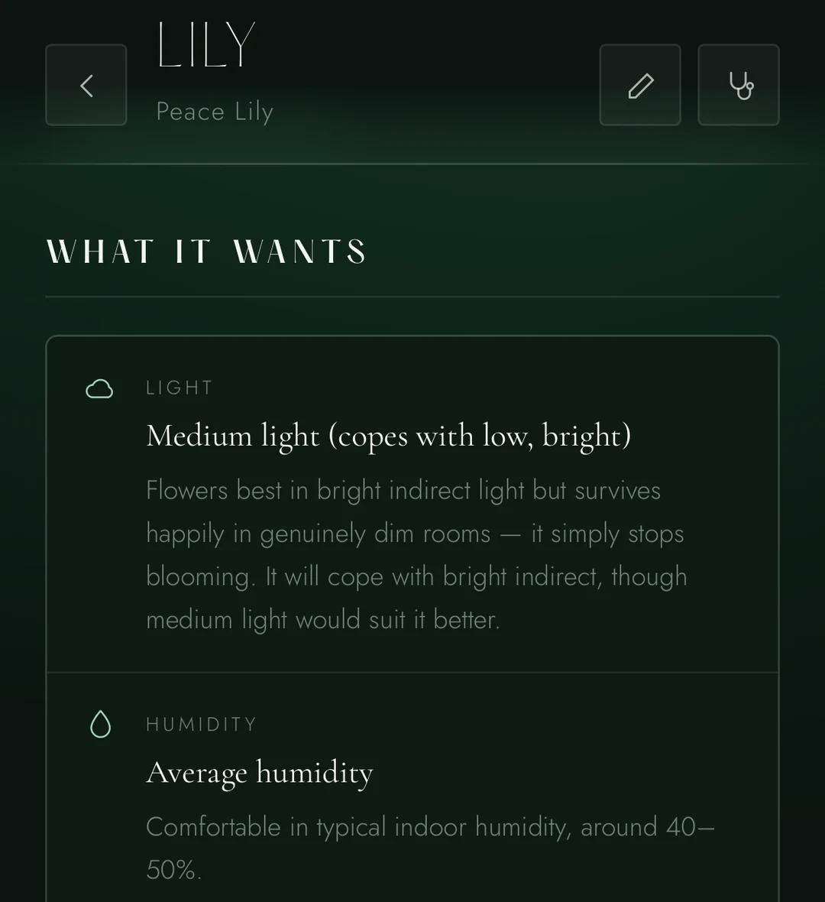

Care schedules built from real species data, the pot it is actually in, how bright the room actually is, and the weather where you actually live.
Draw your home
Trace your floor plan once. Mark where the windows are, point north, and Sprout works out how much light each room gets and which way it faces — then places every room on the same five-rung scale it matches species against.
Light crosses one doorway and no further, one step dimmer. A plant two rooms from a window is not in a bright room, and Sprout will not pretend it is.


Every morning
A Monstera in a 24cm terracotta pot by a north window is not on the same cycle as one in plastic in a dim corner. Sprout adjusts for pot size and material, drainage, room light, window aspect and season — so the list you get is the list that is actually due.
Set a location and it reads the forecast too. Before a hot dry spell it offers to bring watering forward; before a wet week it offers to hold off. You approve every change.
Two of your plants are thirsty
What a reminder actually says
When something looks wrong
Yellow leaves, brown tips, sudden drop, fungus gnats. Start from what you can see.
Answer what else is true and the ranking shifts. A supporting clue lifts a cause; a contradicting one pushes it down.
Weighted by what your particular species is prone to — a fern with crispy edges is a different problem from a cactus with crispy edges.
Worth keeping
Every plant gets a diary and a growth chart. Photos, measurements, milestones, repottings, problems. Watch a cutting become a plant.
Toxicity is rated separately for cats, dogs and humans, because the same plant is not equally risky to each. Tell Sprout what lives with you and it flags what matters.

The part most apps skip
Your plants, photos, diary and schedule live on your phone and are never uploaded. There is no server, no analytics and no profile of you anywhere.
One thing leaves, and it is worth saying plainly rather than rounding up to "everything is local": if you set a location, its coordinates go to the weather service to fetch your forecast. They are rounded to about a kilometre first, so what travels is a neighbourhood rather than an address. Nothing accompanies them and nothing else is ever sent.